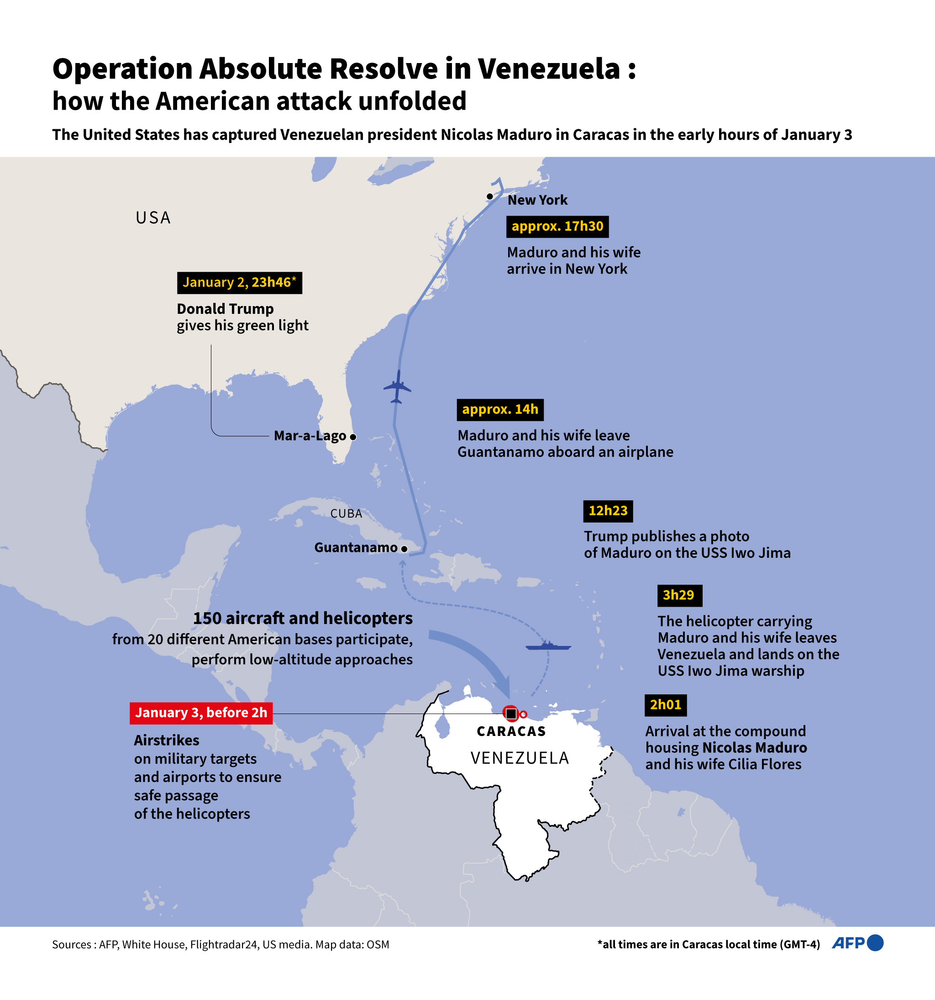
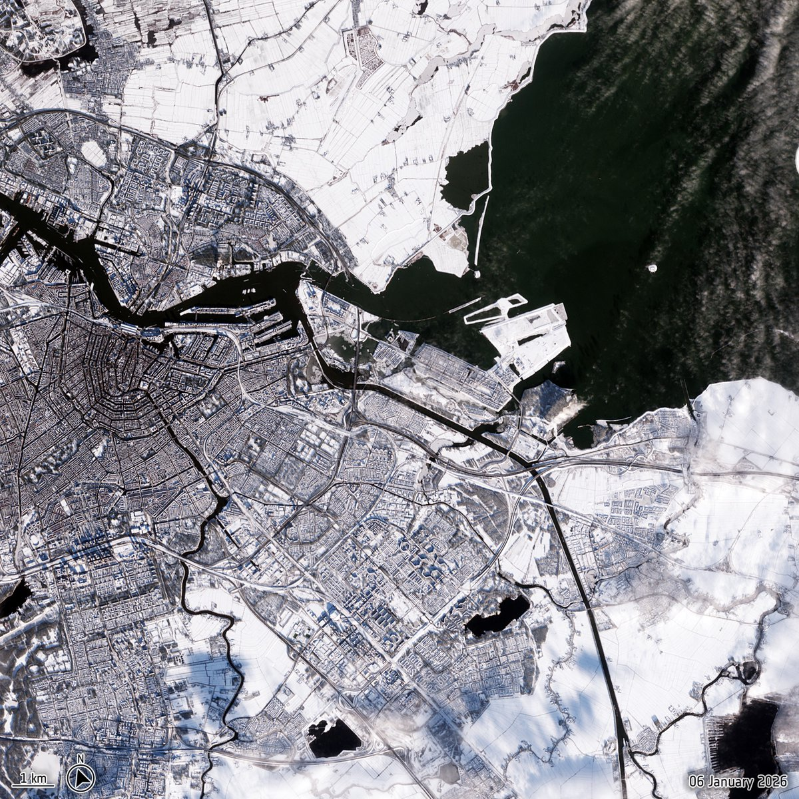

Bulgaria adopts Euro; Crans-Montana fire kills 40, 100+ injured
US captures Maduro; strikes Caracas
Heavy snow Netherlands & Europe; flight disruptions
Turkmenistan crypto reforms
JWST identifies early-universe galaxies; CES tech showcases
Mount Etna erupts; global reactions to Venezuela crisis intensify
NASA spacewalk postponed; US withdraws from 66 int'l orgs
Global Politics & Diplomacy
US Military Action in Venezuela
Jan 3: Operation Absolute Resolve captured President Nicolás Maduro and his wife, transporting them to New York. Vice President Delcy Rodríguez assumed interim leadership. The operation caused international debate about legality and sovereignty, though many Venezuelans in diaspora celebrated the end of Chavismo authoritarianism.
International Reactions
Strong condemnation came from Brazil, Mexico, Cuba, Nicaragua, Russia, and China. UN officials debated legality; Western powers were cautious publicly. Human Rights Watch and WOLA criticized unilateral intervention. Domestic opinion was divided: while most Venezuelans celebrated, some opposed foreign military involvement.
U.S. Withdraws from 66 International Organizations
Jan 8: The U.S. officially withdrew from 66 international organizations, including trade, health, and cultural bodies, citing reform demands and dissatisfaction with multilateral governance.
Critics warned that this may weaken U.S. influence globally and reduce cooperation on issues like pandemic response, climate change, and international security. Supporters argued it demonstrates a more self-reliant foreign policy stance and reduces financial obligations to ineffective organizations.
Economy & Finance
Markets and Oil
Oil prices surged following Venezuelan instability. Defense stocks rose globally. Colombia requested UN sessions regarding refugee flows. Turkmenistan legalized crypto mining on Jan 5.
Science & Technology
Space & Technology Advances
Jan 6: JWST identified early-universe compact galaxies. Jan 8: NASA postponed a planned ISS spacewalk due to medical alert. Jan 6-9: CES 2026: "The Most Powerful Tech Event in the World".
Environmental & Natural Events
Europe & Netherlands Weather
Jan 4-5: Heavy snow in Netherlands, UK, Germany, France, and Balkans disrupted flights and rail. Schiphol canceled hundreds of flights. UK recorded 2025 as hottest year on record alongside extreme winter. Jan 1: Fireworks in Netherlands killed 2 and damaged historic sites.
Asia — Floods & Landslides
Afghanistan flash floods killed 80+. Pakistan landslide killed 6. Indonesia (Siau Island) floods killed 16. Tens of thousands displaced. Emergency responses mobilized rapidly.
Mount Etna Eruption, Italy
Jan 7: Mount Etna erupted violently, sending ash plumes over Sicily and disrupting regional air travel. Lava flows forced temporary evacuations in nearby towns, and authorities monitored seismic activity closely.
The eruption was notable for both the volume of ash and the sudden onset, reminding scientists of Etna's highly active status. Local residents reported ash covering streets and damaging crops, while scientists studied the eruption’s impact on air quality and climate models.
Sports & Culture
Sports Highlights
NFL Wild-Card Jan 3-4 saw top seeds advance. College football: Indiana upset Alabama; Ole Miss defeated Georgia. Argentina qualified early for 2026 World Cup. All scores verified.
Other
Crans-Montana Fire
Jan 1: Bar fire killed 40 and injured 100+. Rapid spread during New Year celebration overwhelmed emergency services. Authorities launched investigations.